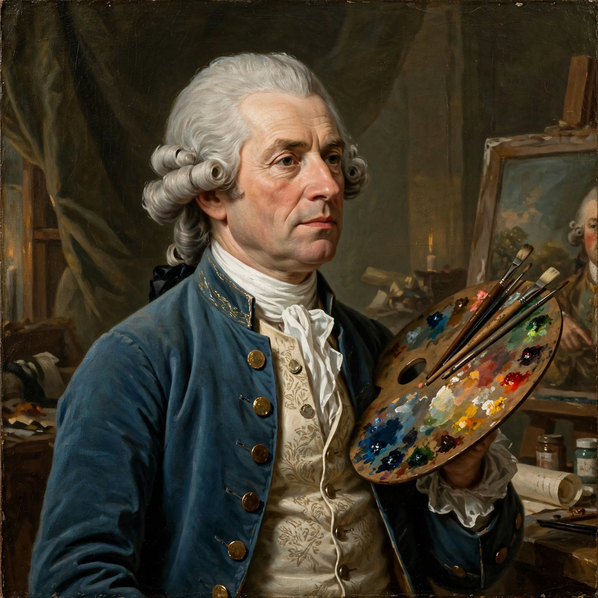

Joshua Reynolds
| Sir Joshua Reynolds | |
 | |
| Born | 16 July 1723, Plympton, Devon, England |
|---|---|
| Died | 23 February 1792 (aged 68), London, England |
| Nationality | English |
| Known for | Portrait painting |
| Notable work | Discourses on Art |
Sir Joshua Reynolds (16 July 1723 – 23 February 1792) was an English painter who specialised in portraits. He promoted the "Grand Style" in painting, which idealised the imperfect subject. He was a founder and first president of the Royal Academy of Arts and was knighted by George III in 1769.
Early life
Reynolds was born in Plympton, Devon, the third son of a clergyman and schoolmaster. Apprenticed in 1740 to the fashionable London portraitist Thomas Hudson, he later travelled to Italy (1749–1752), studying the Old Masters — Michelangelo and Raphael above all — whose influence shaped his art for life.
Career
Back in London, Reynolds rapidly became the most sought-after portraitist in Britain, painting the leading figures of the age — aristocrats, politicians, actors such as David Garrick, and writers including Samuel Johnson, his close friend. His studio ran at near-industrial scale with many assistants. A central figure of London intellectual life, he founded the Literary Club (The Club) with Johnson in 1764.
As first President of the Royal Academy from 1768, Reynolds delivered his celebrated Discourses on Art (1769–1790), lectures arguing that painting should elevate its subjects through generalisation and reference to classical and Renaissance art — the "Grand Manner". His friendly rivalry with Thomas Gainsborough, whose lighter, more naturalistic style he admired, defined British portraiture of the era.
Later life and death
Reynolds lost the sight of his left eye in 1789 and retired from painting. He died in London in 1792 and was buried in St Paul's Cathedral. His experimental use of materials — wax, bitumen and fugitive pigments — caused many of his pictures to fade or crack badly, a flaw already noted in his lifetime.